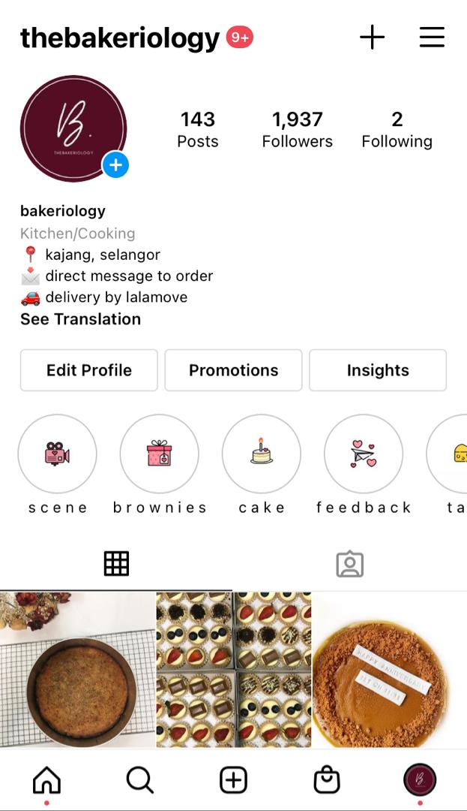
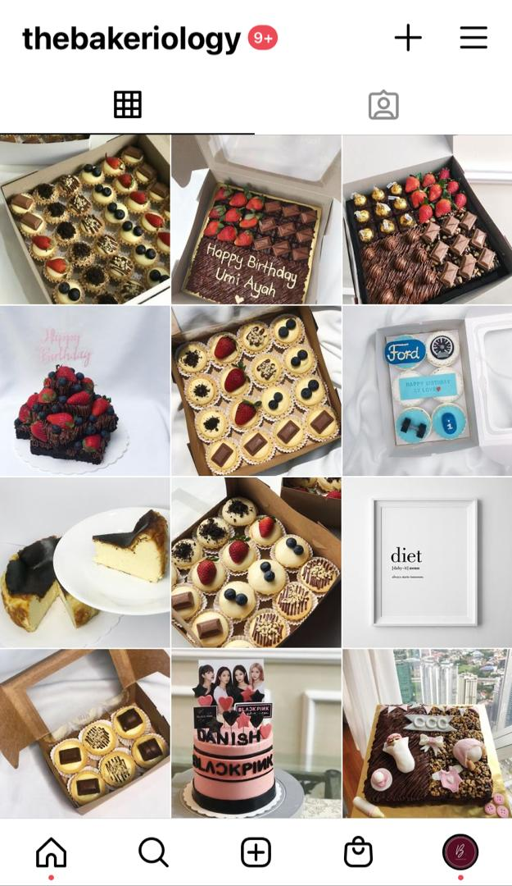

Experience
Home Page |
Biodata |
Portfolio |
Experience |
Contact Me
Nuradzrisya Khalida's
BE EMPOWERED – BE INDEPENDENT – BE HAPPY


Experience
Since i like cooking and baking,
i always help my sister and my aunty to complete all their orders from customers.
My experience are actually beneficial for me, as it could enhance my skills.
besides, i could do experiment to create new ideas.
As time passes and with a lot of practices,
I hope one fine day, i could open up my very own restaurant or bakery.
Well, they say practice makes perfect right?
Next